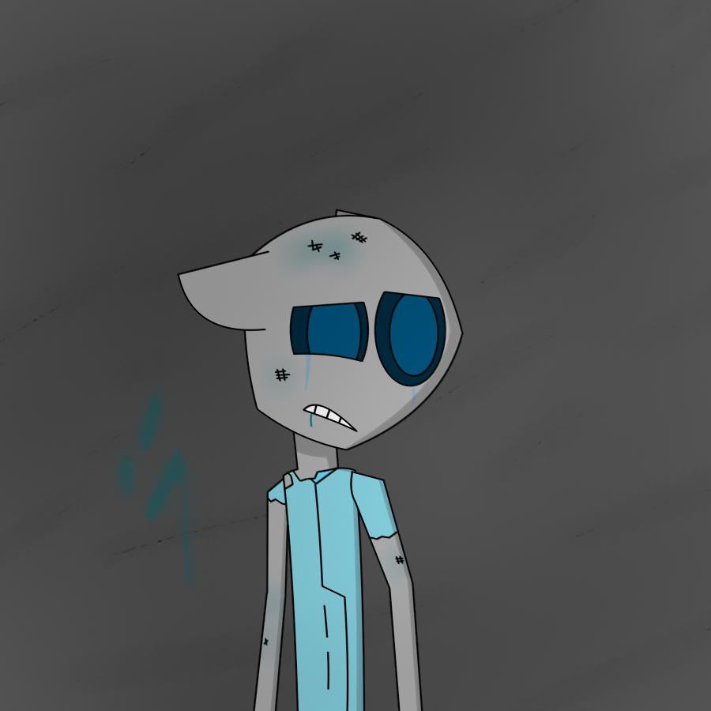

Imagery (3)
Welcome to the images section! Where you look at images I drew from a past to present time. These pictures can range from original pieces of my own characters and projects to fan art of things like Rayman, imscared and 123 Slaughter Me Street. Date is Swedish by the way. Credits are at the end of each description.
The art-style I use is simple and quite easy to learn. If you want to see better then this place isn't for you. The images are free to download but if you're gonna use them for reviews or other purposes then give credit. Stealing/recolor my work will only get you into trouble.
Typiskt Svenskor

Fredag 18 september 2020
Image I made in my work place's computer. (Björnes Magasin)
=== ===
The Burrow World

Torsdag 24 september 2020
Forgotten to add this one.
Burrow World was/is supposed to be an RPG set on a dark world named the Burrow World. Possibly influenced by Cataclysm DDA except not a roguelike.
=== ===
Failure

Torsdag 8 oktober 2020
Raxick art of the main character being broken. I actually made a website dedicated to the project when this site was gone. I don't know what to do with it now when my main website's up again.
=== ===
What Lurks

Söndag 13 december 2020
An image of Jeeme is some sort of Human ship. Didn't thought more about this.
=== ===
It's Kinda Like

onsdag 2 december 2020
Fanart for an old friend. Or ex-friend. That would be the last time I've called someone attention seeking while it is myself that is craving it. I think I even made it worse by blocking him because of my paranoia. What if he was just temporarily angry at me?
Character belongs to InkFury
=== ===
I Think I Know These People

tisdag 26 januari 2021
This might as well be a preview of a future project.
=== ===
Area Work1

lördag 9 januari 2021
This was meant to be an image of someone sitting on a chair infront of a window. Or near a window. Until I made the lighting too complicated. Kinda thought I couldn't continue with this so I named it an area work instead.
=== ===
Buzing Sounds

lördag 6 februari 2021
Or was it buzzing?
=== ===
Page 1
Page 2
Go back to start